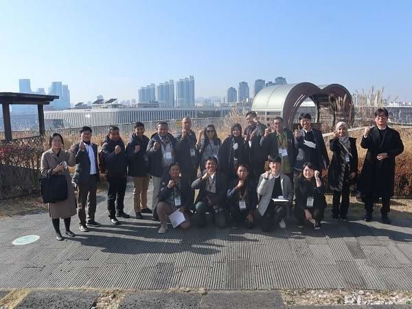

Media Report
삼천리네트웍스, 인도네시아 교통부 한국 초청
DATE : 2023-11-22 [시민일보 = 이승준 기자] 삼천리네트웍스는 지난 14일부터 18일까지 인도네시아 버스터미널 현대화 사업을 위한 한국 초청연수를 성료했다고 밝혔다.
이번 초청연수는 국토교통부와 해외건설협회가 인도네시아 교통부에 ODA 방식으로 지원하는 ‘인도네시아 버스터미널 현대화 시범운영 및 마스터 플랜 수립 사업’의 일환으로 개최 되었다.
수혜주체인 인도네시아 교통부 관계자를 초청해 한국의 선진화된 육상교통 현대화 시스템 노하우 전수가 이번 연수의 목적이다.
참가자들은 서울고속버스터미널, 서울역도심공항터미널, EX 허브역, 시흥하늘휴게소, 잠실광역환승센터, 대전복합터미널 등의 방문을 통하여 터미널 현대화 운영 방식, 매표발권시템, 복합환승지점의 필요성과 시스템 등의 노하우를 전수 받았다.
또한, 서울 시내버스, 지하철 및 KTX 등 한국의 대중교통수단을 체험도 이어졌다.
인도네시아 교통부는 육상교통개발을 위하여 터미널 활성화 계획을 추진 중이다.
이번 연수에 참가한 교통부, 터미널운송과장 아하마디과장은 “인도네시아는 대중교통 활성화를 위하여 관리자와 이용객을 위한 현대화 운영 방식의도입을 위한 다양한 시도를 추진중이라며, 이번연수를 통하여 한국의 우수한 시스템을 인도네시아에도 현지 방식으로 적용할 수 있길 바란다”고 전했다.
임진혁 삼천리네트웍스 대표는 “이번 노하우 전수가 인도네시아 교통 발전에 도움이 되길 바라며 현재 진행중인 사업이 성공적으로 완수 될 수 있도록 다방면의 노력을 하겠다고” 말했다.